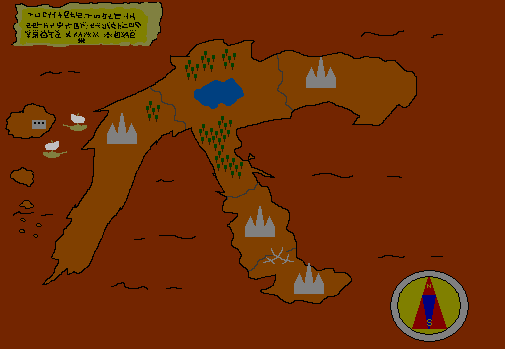

What's Marchen Knight
～メルヘンナイトとは？～

～物語～
昔々・・・精霊や妖精に支配されていた時代。
とある世界にあるツルハシ大陸にレイノン王国という国がありました。
その国は、魔法を大事にする国でした。
ある日、王様のワガママにより始まった「王女様を探せ」祭りは、
賞金が出ることもあり、多くの国民に人気がありました。
しかし、この祭りに事件が起こり、それに参加した騎士学生たちが、
その事件に巻き込まれるのであった・・・
～紹介～
メルヘンナイトは、仲間と一緒に冒険する
よくある横スクロールアクションRPGです。
プレイ時間は、約１時間～２時間
＊本ゲームはセーブ機能がないため、途中で終了するとデータは消えます。
～動作環境～
＃必須環境
OS:Windows *1CPU:1GHz以上 *2
メインメモリー:128MB以上
＃推奨環境 (開発環境)
OS:WindowsXPCPU:Pentium4 1.5GHz以上 Core・AtomCPU以降
メインメモリー:1GB以上
グラフィックカード:VRAM2MB以上
(開発環境では、RADEON 9600PRO VRAM256MB)サウンドカード *3 (開発環境では、Sound Blaster VX5.1)
*1 meで動いたので、おそらく９Xでも動きます。Vista,7βでも動きました。*2 あくまで目安ですが、最低でもOSの必要要件以上の環境が必要です。
開発ソフトの関係で、CPUによる性能で快適さが上下されるようです。
なので、高い性能のCPUでのプレイを推奨します。
性能が低いとステージ後半は、オブジェクト数が増えて
うまく動作しない場合があります。
HTや、デュアルコアなどのCPUでやると処理が分割(？)されるみたいです。
(Pentium4・Core2DuoCPUで確認)*3 サウンドカードやOSによってはうまく音楽が流れない場合があります。